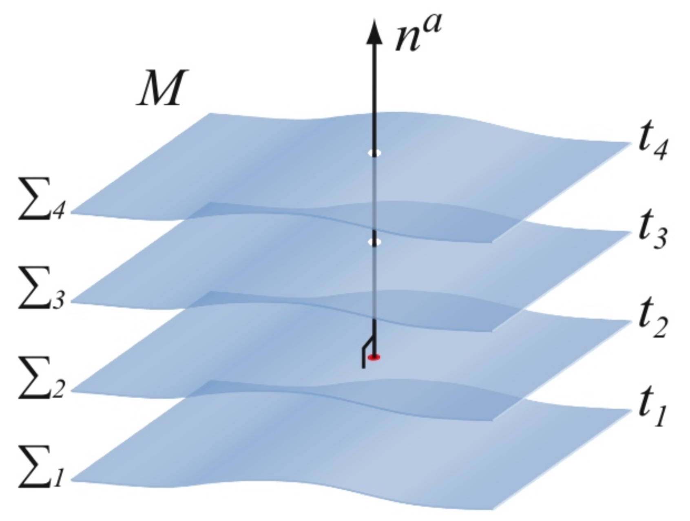
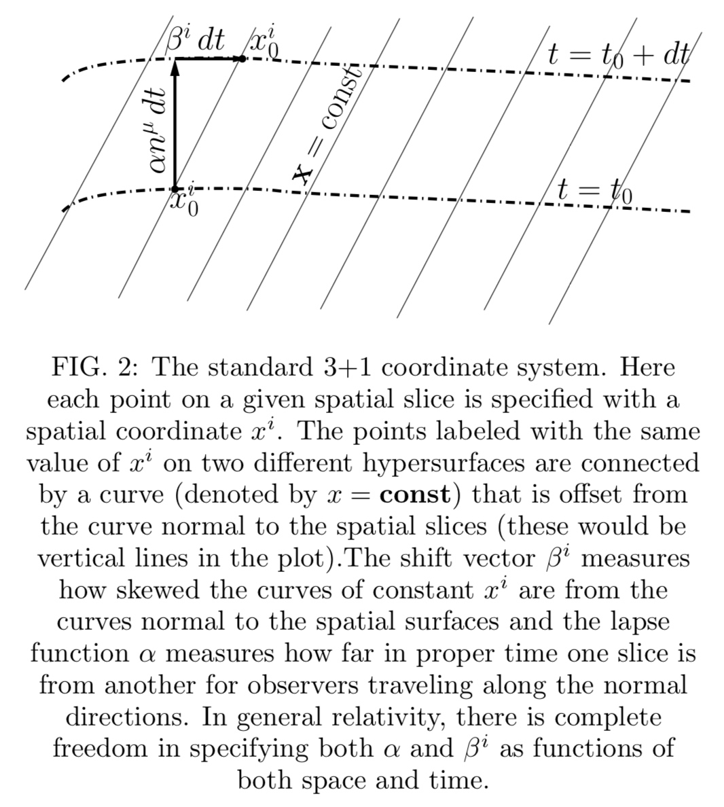
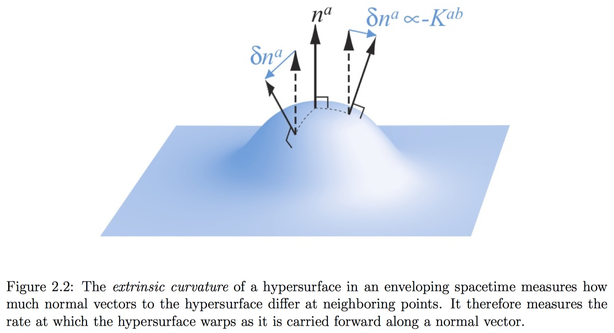

The 3+1 equations are entirely equivalent to the usual field equations but they focus on the evolution of 12 purely spatial quantities closely related to g_{ij} and \partial_t g_{ij} and the constraints that they must satisfy on spatial hypersurfaces. Once these spatial field quantities are specified on some initial “time slice” (i.e. spatial hypersurface) consistent with the 3 + 1 constraint equations, the 3 + 1 evolution equations can then be integrated, together with evolution equations for the matter sources, to determine these field quantities at all later times.
Foliations of Spacetime
We assume that the spacetime (M, g_{ab}) can be foliated into a family of non-intersecting spacelike three-surfaces Σ. The spacetime is split into spatial hypersurfaces labeled by a coordinate t.
Cauchy surface
Cauchy surface is a plane in space-time which is like an instant of time; its significance is that giving the initial conditions on this plane determines the future (and the past) uniquely.

From t we can define the 1-form
which is closed by construction,
The 4-metric g_{ab} allows us to compute the norm of \tilde{Ω}, which we call - \alpha ^ { - 2 }
α measures how much proper time elapses between neighboring time slices along the normal vector Ω^a to the slice, and is therefore called the lapse function. We assume that α > 0, so that Ω^a is timelike and the hypersurface Σ is spacelike everywhere.
We can now define the unit normal to the slices as
Here the negative sign has been chosen so that n^a points in the direction of increasing t, and may therefore be thought of as the four-velocity of a “normal” observer whose worldline is always normal to the spatial slices Σ.
On each spatial slice, coordinates x^{i} are specified (we use the convention that Latin indices take on the values 1, 2, or 3 of the spacelike dimensions). A point labeled x_{0}^{i} on one spatial slice and another with the same label on a different slice may be skewed with respect to the unit normal direction n^a (which must be timelike).

Here, the two points are shifted with respect to each other by a spatial vector \beta^{i}.
The shift vector β^a will measure the amount by which the spatial coordinates are shifted within a slice with respect to the normal vector. The lapse function α measures how much proper time elapses between neighboring time slices along the normal vector. The lapse and the shift therefore determine how the coordinates evolve in time. The choice of α and β^a is quite arbitrary. The freedom to choose these four gauge functionsα and β^a completely arbitrarily embodies the four-fold coordinate degrees of freedom inherent in general relativity.
The lapse and the shift determine how the coordinates evolve from one time slice Σ to the next, whereas the constraint equations represent integrability conditions which have to be satisfied within each slice. Therefore, the constraints have to be independent of how the coordinates evolve, and the lapse and the shift can enter only the evolution equations.
The spatial metric \gamma_{ab}
With the normal vector we can construct the spatial metric \gamma_{ab} that is induced by g_{ab} on the three-dimensional hypersurfaces Σ
Thus \gamma_{ab} is a projection tensor that projects out all geometric objects lying along n^a. This metric allows us to compute distances within a slice Σ. To see that γ_{ab} is purely spatial, i.e., resides entirely in Σ with no piece along n^a, we contract it with the normal n^a,
Note
We break up 4-dimensional tensors by decomposing them into a purely spatial part, which lies in the hypersurfaces \Sigma, and a timelike part, which is normal to the spatial surface. To do so, we need two projection operators.
The first one, which projects a 4-dimensional tensor into a spatial slice
Similarly, we may define the normal projection operator as
We can now use these two projection operators to decompose any tensor into its spatial and timelike parts.
The induced metric is simply the spatial components of the spacetime metric g_{ab}.
The three-dimensional metric only contains information about the curvature intrinsic to a slice Σ, but it gives no information about what shape this slice takes in the spacetime M in which it is embedded. This information is contained in a tensor called extrinsic curvature.
Note
The three-dimensional covariant derivative can be expressed in terms of three-dimensional connection coefficients, which, in a coordinate basis, are given by
The three-dimensional Riemann tensor can be computed from
The three-dimensional curvature R _ { b c d } ^ { a } only contains information about the curvature intrinsic to a slice Σ, but it gives no information about what shape this slice takes in the spacetime M in which it is embedded.
The Extrinsic Curvature K_{ab}

The extrinsic curvature K_{ab} can be found by projecting gradients of the normal vector into the slice Σ. The metric and the extrinsic curvature (\gamma_{ab}, K_{ab}) can therefore be considered as the equivalent of positions and velocities in classical mechanics – they measure the “instantaneous” state of the gravitational field, and form the fundamental variables in our initial value formulation. We now define the extrinsic curvature, K_{ab}, as the negative expansion
By definition, the extrinsic curvature is symmetric and purely spatial. they can only differ in the direction in which they are pointing, and the extrinsic curvature therefore provides information on how much this direction changes from point to point across a spatial hypersurface. As a consequence, the extrinsic curvature measures the rate at which the hypersurface deforms as it is carried forward along a normal.
Finally, we can write the extrinsic curvature as
where L_n denotes the Lie derivative along n^a.
Proof: \gamma_{ab} changes proportionally to K_{ab}
Since n^a is a timelike vector, equation illustrates the intuitive interpretation of the extrinsic curvature as a geometric generalization of the “time derivative” of the spatial metric \gamma_{ab}.